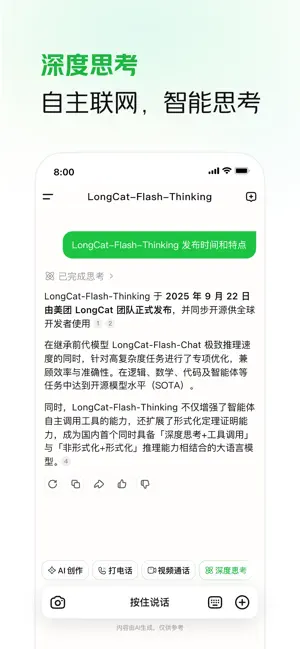

LongCat 体验报告：美团出的 AI 助手，跟别家到底差在哪
AI 助手赛道大厂扎堆，LongCat 靠美团生态打了一张差异牌。本地生活研究、多轮改图、账号直通，这三点让它在同类里占了独特位置。
AI 助手这条赛道上，大厂们从 2024 年开始集体发力，百度、阿里、腾讯、字节每家都有自己的旗舰产品。到 2026 年这个时间点，通用问答、文本生成、语音交互这些基础能力各家都不差，真正拉开差距的是「你能在里面做什么」——也就是场景绑定的深度。
LongCat 是美团在这个赛道投的牌，你可以通过它的官网了解更多。说实话，刚开始我对它没抱太高预期——一个做本地生活的公司出 AI，大概率就是把外卖搜索套个聊天壳。但用了大半年，结论反过来了：它最值钱的地方恰恰是别人做不出来的美团生态整合，而不是通用能力上的堆料。
这篇就从一个老用户的角度说说，LongCat 在同类坐标系里的位置、它做对了什么、又在哪些地方做了取舍。
同类格局：通用选手太多，垂直场景才是破局点
先说大类。目前市面上的 AI 助手大致分三种：
- 通用全能型：主打什么都能聊、什么都能做，靠模型参数堆出来的泛化能力；
- 工具链集成型：把 AI 嵌进自家办公或创作工具里，服务既有用户群；
- 场景原生型：从第一天就围绕某个具体场景设计，AI 能力是为场景服务的。
LongCat 属于第三种——而且是极少数把场景优势真正转化为产品壁垒的。
它的三个差异化亮点
本地生活研究：别家给答案，它给方案
这是 LongCat 最有辨识度的一块。1.7.0 版本上线的「探索本地生活」功能，本质上是把美团的商家数据库、地图数据和 AI 推理能力拧到了一起。
普通 AI 助手你问「周六带父母去哪玩」，它会给你列一个景点清单，每个景点配一两句话介绍。但你还得自己查门票、看开放时间、想怎么串起来、找附近吃饭的地方——列完清单等于问题只解决了一半。
LongCat 的做法不一样。它要的是「主题」而不是「问题」：你给它「周六带父母在城东安排一天」，它会先结合你的定位确定区域，然后联网检索景点开放安排、餐饮口碑、交通衔接，最后输出一份带时间线的完整方案——上午九点去哪、中午十二点吃什么、下午怎么从 A 点到 B 点、预算大概多少。

这个功能的核心不是「回答得更全」，而是「直接给你能用的」。当然，它也有边界——只做研究和建议，不提供团购下单、排队取号这些交易能力，方案里的餐厅还是得你自己去美团 App 预订。但哪怕只是省去了我手动搜五六个页面的麻烦，这一步就值了。
美团账号直通：一个手机号打通，零注册摩擦
很多人忽略了这一点，但账号体系的设计直接决定了一个应用的打开门槛。
LongCat 不做独立账号。第一次打开，输入手机号 + 短信验证码就完事——这个手机号在美团体系里有账号就直接用，没有就自动帮你建一个。头像、昵称这些资料跟美团系应用共享，换绑手机号也在美团 App 里操作，注销同理。
多设备同步也不卡：手机 App 和网页版共用同一账号，对话记录云端同步，换设备登录历史会话还在。
这件事看起来简单，但对比一下就懂了：通用型 AI 助手每家都要你单独注册、单独设置密码、单独填个人信息，多一个应用就多一套账号记忆负担。LongCat 直接把这一步省了——用美团的人拿过来就能用，不用美团的人注册成本也只是输个手机号。低门槛不是没门槛。
多轮改图：改一处不崩全图的「用嘴改图」
生图和识图能力这块，LongCat 也有自己的特点。尤其是多轮改图，我用下来稳定性比试过的几款竞品要好。
它的改图逻辑是「全靠一句话」——对着已生成或上传的图片直接下指令：「头发颜色变成灰色，衣服颜色变成米色，面带微笑」「拉远镜头，显示更多室内场景」「消除最左边的饮料」。模型按指令执行，输出新图，你可以继续下一条。

图像编辑的通病是「改一处崩全图」——改个发色，脸的轮廓悄悄变了；换个背景，光影完全对不上。LongCat 在这方面做了三个针对性设计：风格光影保持一致、人像面部特征锁定、多轮编辑不跑偏。第五轮修改后的画面不会悄悄偏离第一轮的构图基础，这一点实测下来确实成立。
实用技巧也简单：一轮只改一到两处，小步快跑比一次改五处更可控；说「位置」比说「那个东西」准，「右下角的水杯」优于「桌上那个」。改崩了就基于原图重新来，别在崩掉的版本上继续叠加。更完整的编辑任务和参数说明，可以在LongCat文档里翻到。
它的取舍：场景优势的代价
说了三个亮点，也要讲它为这些优势付出的代价。
首先是平台绑定。账号体系绑美团、本地生活数据用美团商家库——这些是优势的源头，但也意味着它只能在美团生态里跑。如果你完全不用美团，那账号直通就没意义；如果你关心的本地生活数据不在美团覆盖范围，本地研究功能也打折扣。
其次是只有移动端。目前主力是手机 App，可以从官方下载获取安装包，网页版能力有限，桌面端还没出。对习惯在电脑上用 AI 助手的用户来说，这是个硬伤。
第三是交易环节仍然割裂。本地生活研究出的方案，预订餐厅、买门票还是要跳回美团 App。LongCat 自己不做交易闭环——这是刻意的设计选择（官方明确说只负责研究与建议），但实际使用中确实会有「研究在 A 应用、下单在 B 应用」的切换成本。
权限方面，它申请的麦克风、相机、相册、定位、通知五类权限都是「按需触发」——第一次用到对应功能才会弹请求，拒绝授权只影响对应功能不影响基本服务。但麦克风权限建议必给，语音交互是这类产品的半条命；定位权限选「仅使用期间允许」就够了。
选购结论：谁该选 LongCat
如果你是美团的活跃用户，平时有大量本地生活规划的需求——带家人出去玩、安排朋友聚会、搬到新城市想摸清周边配套——LongCat 是目前市面上最省心的选择，没有之一。它给的不是「信息」，是「可执行的方案」，这一点同类通用助手做不到。
如果你需要的是一个全能型 AI 助手，写代码、做文档、翻译、创意写作全都要——那 LongCat 不是最优解，通用型选手在这些场景下的能力覆盖更全。
简单说：你有场景，选 LongCat；你要全能，选别家。这不是贬低谁，是赛道分工的自然结果。
最后说一句：LongCat 的表现让我觉得，AI 助手的竞争远没有结束。通用能力会越来越同质化，真正能让用户留下来的，是那些把某个具体场景做深、做透、做到别人抄不走的产品。